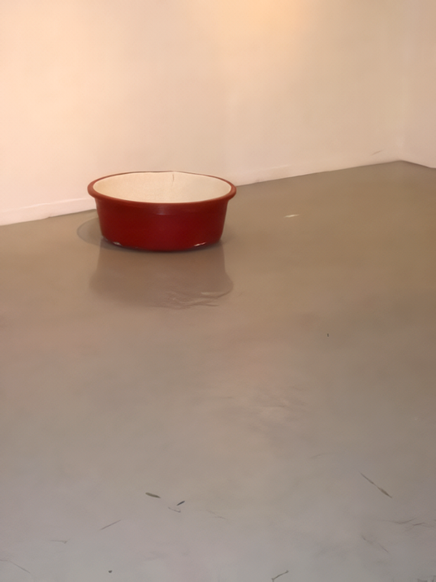
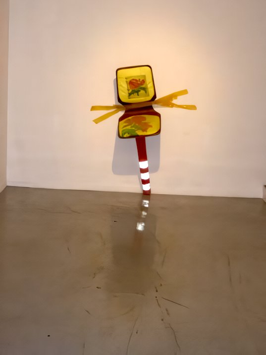
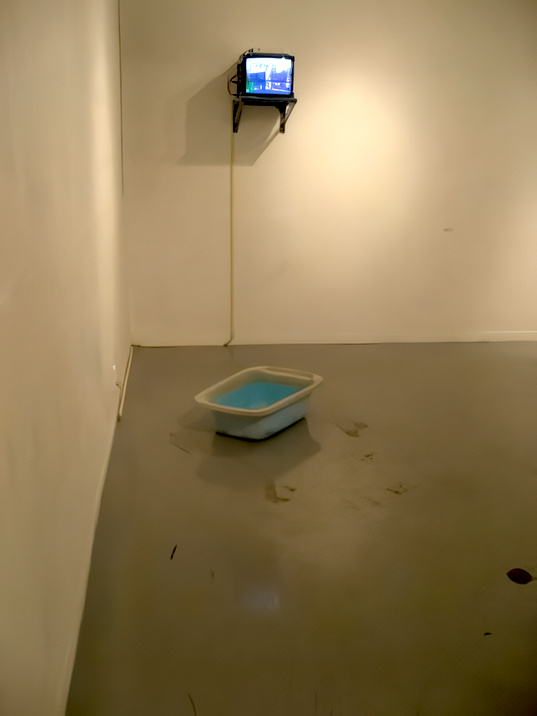

그 하루
안현숙 영상설치展
2006_1217 ▶ 2006_1226
후원_한국문화예술위원회_스톤앤워터_갤러리 꽃
관람시간 / 12:00pm~08:00pm
보충대리공간 스톤앤워터
경기도 안양시 만안구 석수2동 286-15번지
Tel. 031_472_2886
www.stonenwater.org

다라이로 보는 아짐의 시간 ● 남성보다 여성이 쇼핑을 통해 쾌감과 만족을 느낀다는 파코 언더힐의『쇼핑의 과학』의 저술이나, 도시 여성들이 스타일의 유행에 민감하게 반응하며 그 속에서 자아의 정체성을 추구하는 듯한 스튜어트 유엔의『이미지는 모든 것을 삼킨다』는 글들은 글로리아 스타이넘의『남자가 월경을 한다면』에서 "남자가 월경을 한다면 통계자료들이 동원되어 월경 중에 남자들이 스포츠에서 더 뛰어난 능력을 발휘하고, 올림픽에서도 더 많은 메달을 획득한다는 것이 증명된다."는 주장이 결코 터무니없는 말이 아님을 반증하는 사례일 것이다. ● 그러나 문제는 거기에 있지 않다. 소비적인 욕망이 여성의 전유물인 것처럼 이야기하는 그 이면에는 여성성(gender)을 바라보는 남성들의 시각이 남성을 하나의 기계의 부속품이나 그들을 상품으로 환전시킴으로써 나날이 발전하는 산업사회에서 인스턴트식품처럼 끊임없이 변해가는 여성들의 기호를 충족시켜야 하며, 인간관계의 근간이 되는 전통적인 가족 간의 유대를 여성해방의 적으로 여기는 팜므 파탈(femme fatale)의 이미지로 자리할 수 있다는 것이다. ● 소비적인 욕망의 이미지로 여성성의 이미지를 바라보는 사회적인 척도는 올바른 시각인가. 몸배를 입은 한 아짐(아줌마의 광주사투리)이 손수레를 끌며 샐러리맨들이 북적거리는 도심의 한 복판을 가로지르며 집으로 귀가 하고 있는 안현숙의 영상작업은 그러한 시선을 무색케 한다. 그의 「그 하루」전은 장터에 하루 종일 쭈그리고 앉아 물건을 파는 아낙네를 그리고 있는 1960년대의 박수근의 회화처럼 우리사회에 불어 닥친 산업화의 물결이 벌써 한 세대가 흘렀음에도 여전히 재래시장을 중심으로 생계를 꾸려나가는 여성들의 삶의 흔적을 빨간 고무 다라이를 통해 담아내고 있다. ● 박수근의 회화가 바깥에서 바라보는 여성들의 고된 삶의 모습을 하나의 풍경처럼 그려내고 있다면, 안현숙의 설치 영상은 여성들의 삶의 실체를 그들의 분신과도 같은 다라이를 통해 내부로부터 배여 나오는 끈끈한 감성을 드러내는 것이다. 「방앗간-1」의 영상 장면에서 보듯이 고춧가루를 빻기 위해 일정한 간격으로 반복하며 돌아가는 방앗간의 기계는 산업화의 시대임을 예시하며, 고춧가루를 담아내던 바닥의 빨간 고무 다라이는 가내 수공업에서 대량 생산 체계로 전환되었음을 상징하는 것들이다.
작가 안현숙이 주목하는 것은 「그 하루」의 설치물들에서 보듯이 닳고 헤어져 구질구질해 보이는 빨간 고무 다라이들과 이사하기 위해 그것들을 크기대로 포개어 놓은 아짐의 마음이다. 목욕탕의 타일을 깔아 놓은 것처럼 하얀 석고로 내부를 발라놓은 그의 다라이의 오브제에서 보여 지듯이 다라이는 가정에서 주방용으로 사용되는 것은 물론 어린 아이들의 목욕통이나 물놀이 용품으로도 애용되는 물건이다. ● 빨간 고무 다라이는 탄력이 있어 바닥에 이리저리 뒹굴어 다녀도 그리 쉽게 긁히거나, 햇볕에 오랜 시간을 두어도 색이 금방 변질되지 않음에도 「그 하루」의 다라이는 온몸이 바래 있고 군데군데 먼지로 얼룩진 하얀 속살을 드러내고 있다. 그것은 마치 아짐의 거무튀튀한 피부와 골이 깊게 패인 주름을 들여다보는 것처럼 그 주인과 함께 지내온 고단한 삶의 이력들을 이야기해주고 있는 것이다. ● 아짐의 손수레를 따라 지나온 길을 더듬어 가면 시장으로 들어가는 길모퉁이의 한 구석에 쭈그리고 앉아 있는 아짐과 함께 「그 하루」의 다라이는 계절에 따라 산지(産地)에서 가져온 싱싱한 야채들이나, 또는 아짐이 그날그날 다듬어 놓은 찬거리들을 펼쳐놓는 좌판대로 하루를 보내는 것이다. 박수근의 「노상: 앉아있는 여인」의 여인의 모습처럼 「그 하루」의 다라이는 시간이 정지된 듯이 백지와 같은 주인의 표정과 한낮의 무료한 순간들을 보내고 나서야 지나가는 행인들의 먼지를 조금씩 먹으며, 장을 보러 나오는 여인들과 몸을 부대끼면서 그 무거운 짐을 내려놓는 것이다. ● 가끔은 눈살을 찌푸린 거리의 단속반에 의해 이리 저리 정신없이 쫓겨 다녀 온몸에 멍이 들어도 「그 하루」의 다라이는 아짐을 지켜왔다. 도시화의 물결에 밀려 점차 그 설자리를 잃어 가고 어느 날엔가 「그 하루」의 다라이는 기억에서 잊혀져 갈 것이다. 그래도 이 거리의 사람들은 「그 하루」의 다라이와 아짐의 깊이 패인 주름을 조금씩 자양분으로 하여 무럭무럭 자라 거리를 활보하고 있고, 그렇게 아짐의 아들과 딸들도 성장하여 시집도 가고 장가도 간 것이다. ● 이제는 너덜너덜 헤어진 「그 하루」의 다라이를 아무도 눈여겨보는 이도 없지만, 박수근의 「노상: 앉아있는 여인」의 여인들이 매듭이 풀리고 살이 삐져나온 소쿠리들을 소중히 간직했던 것처럼 오늘도 아짐은 자신이 살아온 삶의 거울을 들여다보듯 정성스레 싼 이사짐 옆에 다라이들을 놓고 있다.

조관용 ● 몸배를 입은 한 아짐이 손수레를 끌고 깔끔하게 차례 입은 젊은 남녀들과 함께 횡단보도를 건너는 영상 장면은 아주 인상적이었습니다. 그 아짐의 모습은 어쩌면 제가 어린 시절부터 보아왔던 저의 어머니는 물론 동네 아줌마들의 억척스런 모습과 닮아 있는 것 같아요. 그리고 광주의 말바우 시장을 중심으로 펼쳐지는 영상 장면은 제가 지금 살고 있는 아현동은 물론 70년대와 80년대의 서울의 사대문 안의 중심지를 제외한 도시 전체가 한창 개발되는 기억과 어린 시절부터 지금까지 보아온 동네 근처의 재래시장의 풍경을, 아니 그 보다 여성들의 삶의 속내를 다시 생각해보게 합니다.
안현숙 ● 좌판대로 시작하는 아짐의 하루는 사회적인 위계로서 보다는 도시인의 삶을 역동적이게 하는 하나의 에너지로 보아야 하지 않을까요. 제가 영상 장면에서 비유적으로 보여준 방앗간의 톱니바퀴처럼 그것이 제대로 맞물려 돌아갈 때 비로소 쿵 쿵 쿵...거리며 거대한 굉음을 내는 하나의 메커니즘으로서 말이죠. 지금도 기억이 납니다. 제가 놀이터처럼 헤집고 다녔던 어린 시절의 시장터의 좌판대에서 흘러나오는 생기 넘치는 아줌마들의 삶의 모습들이...그리고 어린 시절 지금의 공방처럼 북아현동 산동네인 저희 집에서 동네 아줌마들과 언니들이 북적되며 일하는 모습들이요. 점심시간이면 아줌마들이 동네 돌아가는 이야기들을 늘어놓고, 언니들이 수다를 떠는 이야기들을 들으며 그 시간들을 기다렸던 저에게 그것은 사회를 바라보는 하나의 창이었죠. 그렇게 과거 언니들이 현재 아짐으로 변하였어도, 그것이 지금도 복잡한 도시의 메커니즘을 유지하고 생성시키는 여성의 심층적인 과정을 볼 수 있는 하나의 시선이 아닌가 생각합니다.
_waifu2x_photo_noise3_scale.png)
조관용 ● 작년 봄인가. 저도 옥상에서 「그 하루」의 다라이와 같이 아주 생소해 보이는 대형 고무 다라이를 보았죠. 그래서 어머니에게 여쭤보고 기억을 더듬어 보니 오래전에 사용한 기억이 나 더 군요. 한 15년 이상도 더 된 것 같아요. 저는 오래되고 더 이상 사용할 수 없을 같아 버리자고 했죠. 그랬더니 어머니는 고추나 그 밖의 야채를 심는 화단으로 사용할거라고 이야기하시 더 라구요. 집이 낡아 옥상에 무거운 물건들을 올려놓는 것을 걱정하시면서도 ...그런데 가만히 보니 그 다라이가 어머니의 모습과 닮아 있더 라구요. 이제는 검은 반점도 조금씩 피어나고, 전과 달리 기운이 쇠해진 것을 보니. 그 일이 있고 나서부터 아줌마들의 삶에 대해, 아니 여성들의 삶에 대해 한 번 더 들여다보게 되어 다구요.
안현숙 ● 「그 하루」의 작업은 다라이를 통해 보는 일종의 다큐멘터리라고 할 수 있습니다. 헤어지고 너덜해진 다라이는 우리의 피난 시절의 역사와 산업자본주의속에서 살아가는 아짐(여성)의 노마드적인 삶의 단면을 엿 볼 수 있습니다. 다라이에 관한 기억은 저에게는 어린 시절 여름날 마당에서 동생과 함께 등물 하던 정경이 떠오릅니다. 그것이 지금도 무의식적으로 지니고 있는 일종의 공동체적인 경험이라고나 할 까요. 그래서 「그 하루」에 쌓여진 오브제의 순서는 바로 이사할 때 제일 먼저 트럭에 얹혀 놓게 되는 순서라고 볼 수 있죠. 다라이, 그 위에 탁자, 그리고 손수레를 얹고 식탁을 쌓아 올린 구도들은 말이죠. 그리고 식탁 구멍 주위로 붙여진 노란 박스 테이프는 끝도 없이 이사를 다니던 지긋지긋한 기억을 떠올리게 하는 것이죠. 그런데 그렇게 이사를 통해 헤어지고 너덜해진 다라이는 또한 우리할머니들의 피난 시절의 삶을, 그리고 산업자본주의와 도시의 급속한 팽창과정에서 겪게 되는 정치적 강제이주와 철거 과정들의 아짐의 삶으로 이어지는 과정을... 다시 말해 70년대 초반에 전라도 유민(다라이)이 강북으로, 그리고 다시 성남으로 이동하고, 후반에는 충청도 유민(다라이)이 서울의 외곽지역인 경기도 변두리로 이동하는 일종의 경제적 노선의 흔적을 읽게 되죠.
■ 조관용

「리모델링」에서부터 「그 하루」까지 안현숙의 작품에서 관찰할 수 있는 것은 강요된 것으로 제시되는 무의미한 노동의 기록을 정직하게 기록함으로써 그것을 오히려 긍정적이고 생산적인 영역으로 전환시키는 방식이다. 그의 영상작업 속에서는 인체의 움직임에 대한 관심이 자주 발견되는데, 이 움직임은 추상적인 요소로 환원되어 있을 때라도 사회적인 관심사와 분리되어 존재하지 않는다. 예컨대 마주 서서 서로의 손바닥을 밀어 넘어뜨리는 게임을 영상화한 작업에서도 마주 선 사람들 간의 미묘한 역학관계와 그 관계의 성격에 대한 작가의 유형적 해석을 감지할 수 있다. 시장에서 장사를 하는 평범한 사람들의 일상을 포착한 2006년의 개인전에서 그는 아주머니들이 끌고 다니는 보따리의 움직임이나 고춧가루를 빻는 절굿공이의 움직임, 혹은 옥상에서 바람에 날리는 빨래의 움직임처럼 단조롭고 반복적인 일상적 움직임에서 아름다움을 읽어내고 시간 속에 축적되는 노동의 가치를 담아낸다. 이와 비슷한 맥락에서 작가는 소소한 일상의 역사를 간직한 낡은 물건들에 대한 애정을 보여준다. 붉은 색 다라이, 불판, 수레, 아기욕조, 다리가 하나뿐인 의자 등 지금은 쓸모없어진 물건들을 오브제로 재창조함으로써 작가는 이 물건들이 상징하는 고단한 삶의 흔적을 표현할 뿐 아니라 정주하지 못하고 떠도는 삶의 시간 그 자체에서 묻어나오는 건강한 생명력을 드러내고자 한다.
■ 조선령